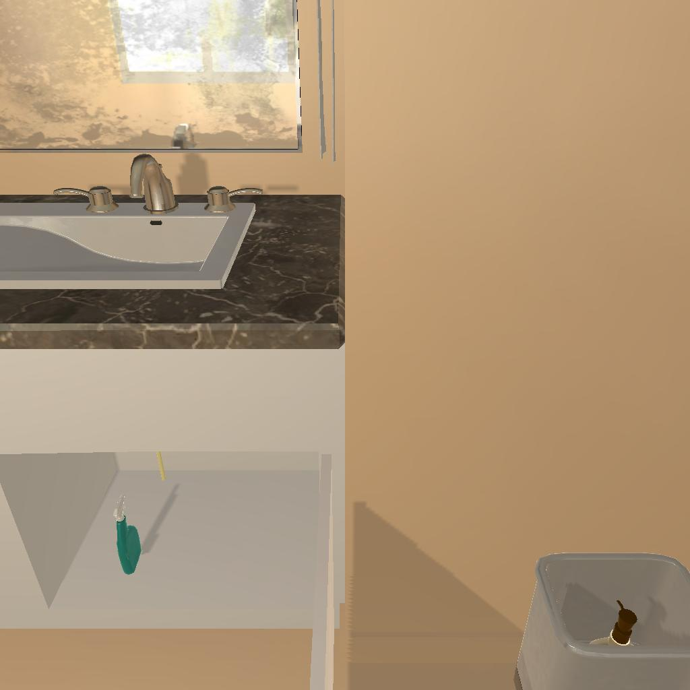

---------------------------------------------------------task: 11---------------------------------------------------------
--------------------------------------------------------------------------------------------------------------------------------------------------------------------
--------------------------------------------------------------------------------------------------------------------------------------------------------------------
Step:--------------------------------------------------------------------------4-------------------------------------------------------------------------------
----------------------------------------
VLM Prompt:
**Task**
Please perform as an embodied AI agent. Our final objective is to clean some soapbar and put it in bathtubbasin. Below is the plan for completing the task, the current observation, alongside historical data and admissible actions for the next step. Please determine the best action for the next step!
**Plan**
Below is a detailed step-by-step plan to complete the task.
1. Find a soap bar.
2. Pick up the soap bar.
3. Find a sink or basin.
4. Clean the soap bar with the sink or basin.
5. Find a bathtub basin.
6. Place the cleaned soap bar in the bathtub basin.
**Current Observation**
Displayed is an image capturing the current position of the agent.
Objects in The Image: ['bathroom sink', 'faucet', 'window', 'soap dispenser', 'toilet', 'toilet brush']
**History Information**
Displayed are the previous observations with their corresponding actions.
State 0:
No history.
State 1:
1. Step Index in the Plan: 1
2. Objects: Sink, Faucet, Countertop
3. Action: go to cabinet 1
State 2:
1. Step Index in the Plan: 1
2. Objects: Bathroom Sink, Faucet, Cabinet (not yet confirmed to contain soap bar)
3. Action: open cabinet 1
State 3:
1. Step Index in the Plan: 1
2. Objects: Toilet, Toilet Tank, Toilet Paper Roll, Bathroom Sink, Faucet, Countertop, Cabinet 1 (previously searched)
3. Action: go to cabinet 2
State 4:
1. Step Index in the Plan: 1
2. Objects: Bathroom Sink, Faucet, Drawer, Window, Toilet, Toilet Brush, Cabinet 1 (searched), Cabinet 2
3. Action: open cabinet 2
**Admissible Actions**
(1): go to bathtub 1
(2): go to bathtubbasin 1
(3): go to toilet 1
(4): go to cabinet 1
(5): go to countertop 1
(6): go to sink 1
(7): go to sinkbasin 1
(8): go to garbagecan 1
(9): close cabinet 2
(10): take faucet 2 from cabinet 2
(11): take spraybottle 2 from cabinet 2
(12): take handtowel 1 from cabinet 2
(13): take soapbottle 1 from cabinet 2
(14): take candle 2 from cabinet 2
**Analysis Guideline**
1. Analyze the history and current observation, and then determine our current step in the plan and our current place.
2. List all visible objects related to the task in the current observation, without summarizing any as "various items."
3. Analyze the objects in the current observation based on the history and the requirements for the current step, and then determine if we can complete the step with the current observation.
4. Analyze and decide on the most appropriate action to take.
5. Summarize the analysis using the following format: "Analysis: [The summarization of the analysis], The Most Appropriate Action: (i which is the integer.): [Selected action]"
**Notes**
1. We must complete each step of the plan in order and cannot skip steps when the previous ones are not finished.
2. For "Go to" actions listed as "go to xxx [n]", interpret this as there are n distinct actions available: "go to xxx 1", "go to xxx 2", ..., "go to xxx n". Select one specific action from these options instead of using "go to xxx [n]".
3. If receptacles such as drawers, cabinets, and so forth are closed in the current observation, we may try to open them.
4. Pay attention to synonyms and ensure clarity in the terms used.
5. We must determine and provide the single action which must be in the **Admissible Actions**.
6. If there is no history available, we are at the first step and the current place is "Unknown".
**Answer**
Please select the most suitable action by following the **Analysis Guideline**, keeping the above **Notes** in mind.
----------------------------------------
----------------------------------------
VLM Response:
Analysis: According to the history information, we are still at the first step of the plan, which is to find a soap bar. The current observation shows a bathroom sink, faucet, window, soap dispenser, toilet, and toilet brush, but no soap bar is visible. Based on the objects listed in the current observation and the history provided, we have not yet found a soap bar. The history indicates that we have already searched Cabinet 1 and were in the process of searching Cabinet 2 when the last action was taken. The admissible actions include taking various items from Cabinet 2, but none of these items is a soap bar. The most appropriate action would be to continue searching for a soap bar, which may involve taking items from Cabinet 2 to find it if it is hidden behind them.
The Most Appropriate Action: (14): take candle 2 from cabinet 2
----------------------------------------
----------------------------------------
>>> Refine VLM Response and Get Pure Action: take candle 2 from cabinet 2
----------------------------------------
-----------------------------------------------------------------
Running time: 10.919511795043945 seconds
Total Money: 0
-----------------------------------------------------------------
-----------------------------------------------------------------
Summarization Prompt:
**Context**
Analysis: Since there is no history information, we are at the first step in the plan, which is to find a statue. The current place is unknown. In the current observation, we see a floorlamp next to an armchair with a small table that has a small object on it, which could potentially be the statue we are looking for. Since the plan requires us to find a statue first and it appears there might be one on the table next to the armchair, we should investigate this object to determine if it is the statue we need.
The Most Appropriate Action: (1): go to armchair 1
**Summary**
1. Step Index in the Plan: 1
2. Objects: Floorlamp, Armchair, Small Table, Small Object (potential statue)
3. Action: go to armchair 1
**Context**
Analysis: According to the history information, we are still at the first step of the plan, which is to find a soap bar. The current observation shows a bathroom sink, faucet, window, soap dispenser, toilet, and toilet brush, but no soap bar is visible. Based on the objects listed in the current observation and the history provided, we have not yet found a soap bar. The history indicates that we have already searched Cabinet 1 and were in the process of searching Cabinet 2 when the last action was taken. The admissible actions include taking various items from Cabinet 2, but none of these items is a soap bar. The most appropriate action would be to continue searching for a soap bar, which may involve taking items from Cabinet 2 to find it if it is hidden behind them.
The Most Appropriate Action: (14): take candle 2 from cabinet 2
Please summarize the context by following above examples when providing the summary, and ensure that only the summary is included, without any extra explanation.
**Summary**
-----------------------------------------------------------------
-----------------------------------------------------------------
Summarization Response:
1. Step Index in the Plan: 1
2. Objects: Bathroom Sink, Faucet, Window, Soap Dispenser, Toilet, Toilet Brush, Cabinet 1, Cabinet 2
3. Action: take candle 2 from cabinet 2
-----------------------------------------------------------------
-----------------------------------------------------------------
Text Observation:You pick up the candle 2 from the cabinet 2.
-----------------------------------------------------------------
UNSUCCEED